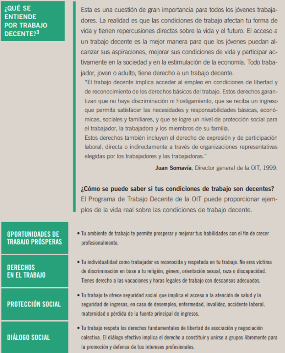

Introduccion al Mundo Laboral
El derecho del trabajo
El derecho del trabajo es el conjunto de principios y normas jurídicas que regulan las relaciones laborales y cuyo objeto principal es proteger al sector trabajador ante la desigualdad en que éste se encuentra frente al sector empleador.
Dentro de este concepto se distinguen: El derecho individual del trabajo: que regula las relaciones del contrato individual de trabajo; es decir, las relaciones entre un/a empleador/a y un/a trabajador/a.
Sus principios están contenidos, principalmente, en la Ley de Contrato de Trabajo (Ley N° 20744 y sus modificatorias). También existen actividades que tienen regulaciones específicas (periodistas; trabajadores/as de casas particulares; Régimen de Trabajo Agrario; etc.).
El derecho colectivo del trabajo: que regula las relaciones entre los sujetos colectivos; es decir, entre las representaciones de los/as trabajadores/as –sindicatos– y las representaciones de los/as empleadores/as –cámaras empresariales–.
Sus principios están contenidos, principalmente, en la Ley de Convenciones Colectivas de Trabajo (Ley N° 14250) y en la Ley de Asociaciones Sindicales (Ley N° 23551).
Trabajo en relación de dependencia y Trabajo Independiente
| Trabajo en relación de dependencia | Trabajo independiente | |
|---|---|---|
| Organización y planificación | La tarea que realiza el/la trabajador/a es organizada por quien lo/la emplea o contrata. -Hay “control externo” sobre la actividad y se provee al/a la trabajador/a de los equipos y las máquinas. -Está determinado qué, cómo, con qué y cuánto hace el/la trabajador/a. | Es indispensable planificar y organizar, distribuir y supervisar la tarea propia. |
| Propiedad del trabajo | El/la trabajador/a en relación de dependencia no tiene la propiedad, pues el dueño es el jefe, al que hay que obedecer las normas, horarios, etc | El/la trabajador/a independiente es dueño/a del producto de su trabajo; trabaja para sí mismo/a. |
| Horario y dedicación | El sector trabajador cumple un horario fijo establecido por su superior. | El horario y la dedicación están condicionados por las necesidades del negocio. No hay horarios fijos. El tiempo está condicionado a la planificación personal. Depende del tipo de emprendimiento: comercio, por ejemplo. |
| Tareas y objetivos | Cumplimiento de la tarea asignada. -Se reciben órdenes. -La autonomía es escasa o relativa. | El/la trabajador/a independiente se fija sus propios objetivos. -Predomina la autonomía. -El negocio depende de la búsqueda de oportunidades, la información sobre productos, clientes, competencia, la toma de decisiones, etc. |
| Remuneración | La remuneración está pactada o definida por el convenio colectivo de trabajo del sector o, en su defecto, por acuerdo entre el/la empleador/a y el/la trabajador/a. -Habitualmente no hay participación en las ganancias. Puede haber porcentajes sobre ventas (comisiones). | La retribución personal está relacionada con costos, ganancias, reinversión (compra de materiales, máquinas, equipos), etc. -La distribución de ganancias es establecida por el/la emprendedor/a y/o socios (en caso de que sea asociativo). |
| Competencias requeridas | Las competencias propias del puesto de trabajo. | Además de las competencias del puesto de trabajo se requieren conocimientos de gestión empresarial, administración, búsqueda de mercados, etc. |

La Relacion Laboral
Se habla de relación laboral cuando una persona desarrolla tareas para otra persona o empresa, recibiendo una remuneración a cambio. Es decir que una persona trabaja en relación de dependencia cuando depende de alguien que lo emplea y le paga un salario por realizar determinadas tareas. En la relación laboral tenemos:
- Por un lado al trabajador que pone a disposición su trabajo, esfuerzo o fuerza laboral a cambio de una remuneración que es el salario;
- Por otro lado está el empleador, quien tiene la obligación de asignar tareas y pagar un sueldo a cambio.
A partir de esta relación laboral de dependencia surgen los derechos y obligaciones para los empleadores y trabajadores. La relación laboral está regida por la Ley de Contrato de Trabajo, conocida como L.C.T. El trabajador es siempre una persona física. El empleador puede ser una persona física o una empresa, un comercio, etc. Todas las organizaciones que no son una persona física se llaman personas jurídicas. Las personas jurídicas pueden ser una asociación, una sociedad anónima, una fundación, un comercio, una fábrica, una empresa.
Tipos de Contratos
Dura hasta que el trabajador se encuentre en condiciones de jubilarse por límites de edad y años de servicios, salvo que se configuren algunas de las causales de extinción previstas en la Ley de Contrato de Trabajo.
El contrato de trabajo por tiempo indeterminado se considera a prueba durante los primeros tres meses de vigencia, excepto el contrato de trabajo por temporada. Trabajador y empleador pueden extinguir la relación durante ese lapso sin explicitar la causa sin derecho a indemnización, pero con obligación de preavisar según lo establecen los artículos 231 y 232 de la LCT.
Conocido también como contrato de aprendizaje, este acuerdo remunerado brinda la oportunidad de realizar una actividad formativa para el trabajador profesional que debe ser mayor de 16 años. El tiempo de duración será de 1 año con posibilidad de prorrogarse a 3 años más. Los beneficios de este tipo de contrato son muchas, entre las más destacadas reside la oportunidad de insertarse al mercado laboral mientras recibes formación y asesoramiento.
- Respecto al salario, deberá ser pactado mediante convenio colectivo teniendo un valor de al menos el 60% del monto fijo percibido por cualquier otro empleado que ejerza mismo puesto laboral.independientemente si la jornada será completa o parcial.